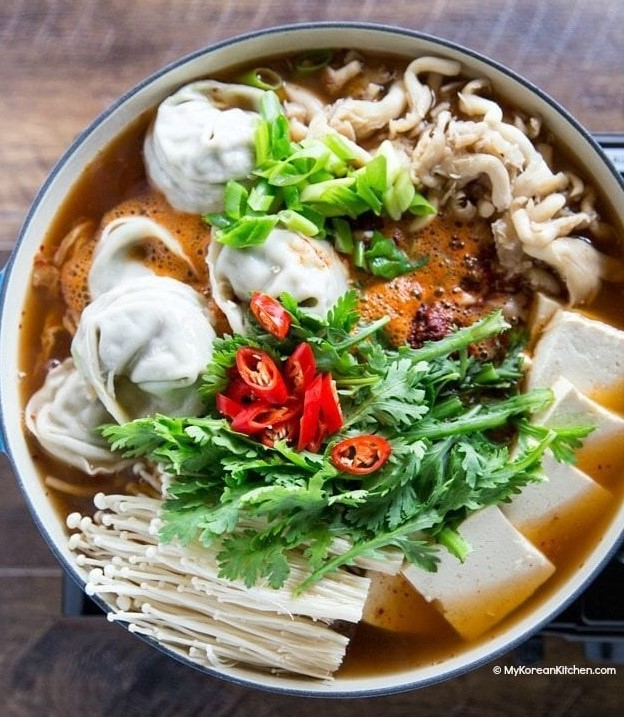

Korean Hot Pot With Dumplings
Ingredients
MAIN
- 8 your choice of dumplings (mandu), (560 g / 1.2 pounds)
- 300 g kimchi (10.5 ounces ), thinly sliced
- 300 g firm tofu , sliced (about 1.5cm, 1/2 inch thickness)
- 1 pack enoki mushrooms (200 g / 7 ounces), base stem removed & stems separated
- 1 pack oyster mushrooms or your choice of other mushrooms (200 g / 7 ounces), separated
- 20 g green onions (0.7 ounces), thinly sliced
- 40 g onion (1.4 ounces), thinly sliced
- 4 cups vegetable stock or Korean soup stock
- 35 g crown daisy leaves (edible chrysanthemum), (1.2 ounces), separated from the main stem, (optional)
- 1 red chili , thinly sliced, (optional)
HOT POT SAUCE (MIX THESE TOGETHER IN A BOWL)
- 2 Tbsp Korean chili flakes (gochugaru)
- 2 Tbsp rice wine
- 1 Tbsp soy sauce
- 1 tsp Korean fish sauce
- 1 tsp minced garlic
- A few sprinkles ground black pepper
- fine sea salt , if required - I didn’t use it.
Directions
- Place the prepared ingredients in a large shallow pot. (FYI, I laid down onion and kimchi at the bottom of the pot, then arranged the remaining ingredients on top, in sections.) Boil the pot over medium high heat until rapidly boiling then reduce the heat to medium low to low. Start serving the dish as individual ingredients get ready. You may turn the heat off at any time. Serve with steamed rice.
Go Back!